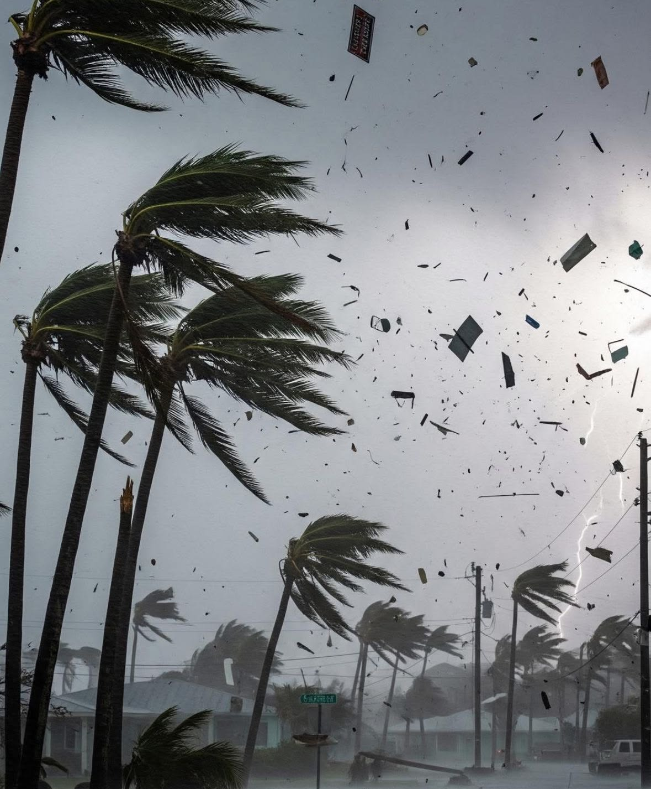
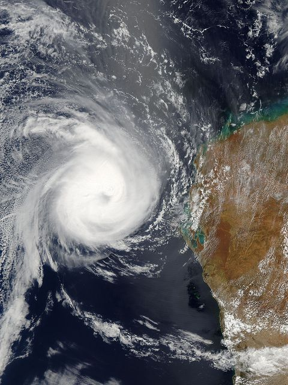
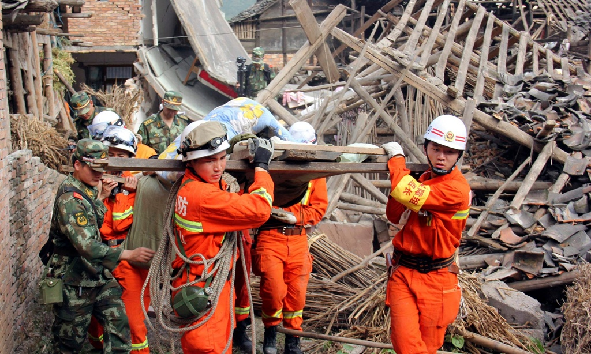
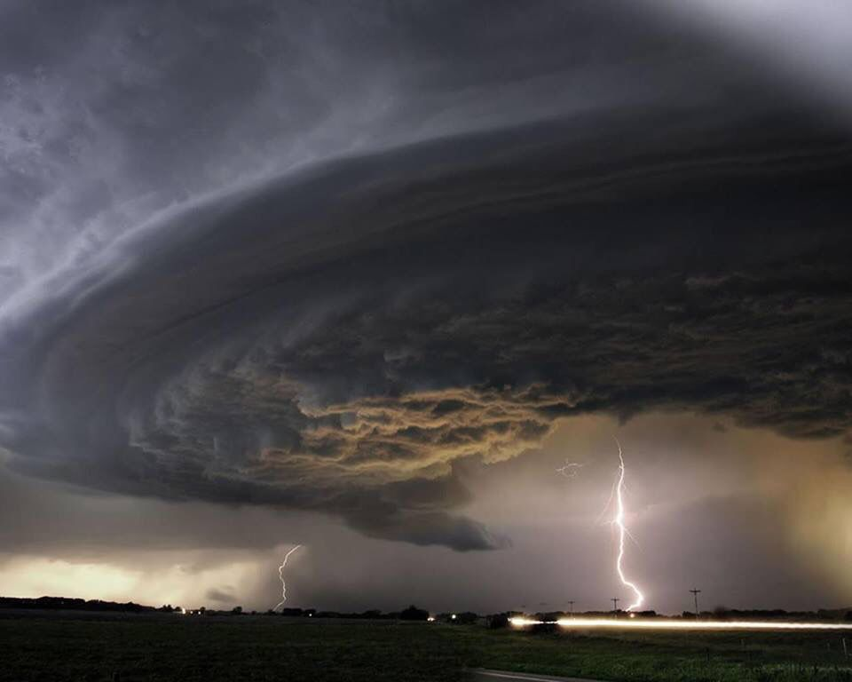

Coastal communities in Myanmar face risks from strong winds, storm surges and coastal erosion. These hazards can damage homes, farmland, roads and important infrastructure.
Cyclone impact prevention focuses on reducing these risks through long-term improvements. Protecting natural barriers, strengthening coastal structures and managing land use can help limit future damage.
These long-term solutions can reduce the vulnerability of coastal communities in cyclone-prone areas.

Mangrove forests act as natural barriers along coastlines. Their thick roots help hold soil together, reduce coastal erosion and slow down waves and storm surges before they reach nearby villages.
In cyclone-prone areas of Myanmar, especially the Ayeyarwady Delta, protecting existing mangroves and replanting damaged areas can help strengthen natural coastal protection. Cutting down mangroves should also be controlled.
Mangroves can reduce wave energy and coastal erosion, helping protect nearby homes, farmland and communities.

Strong winds during cyclones can damage roofs, walls and entire buildings. Houses and important facilities in cyclone-prone areas should be designed with stronger structures to reduce the risk of damage.
This can include securely attached roofs, reinforced walls, strong foundations and suitable building materials. Schools, hospitals and community buildings should also follow cyclone-resistant construction standards.
Stronger buildings are less likely to be severely damaged by strong winds, helping protect people and important facilities.

Storm surges can push seawater inland and cause serious flooding in low-lying coastal communities. Seawalls and embankments can help reduce the amount of seawater entering vulnerable areas.
Authorities can also improve drainage systems and maintain waterways so that heavy rainfall can flow away more easily. These structures should be properly planned and maintained to remain effective.
Coastal barriers can reduce the impact of storm surges, while better drainage can help reduce flooding caused by heavy rainfall.
Want to know more about cyclone safety? You can send us a message here. We are happy to hear your ideas!
stormora@gmail.com
We share simple tips to help people prepare for cyclones.
Listen to weather updates, know where to go, and have an emergency plan.
Let's help everyone stay prepared.